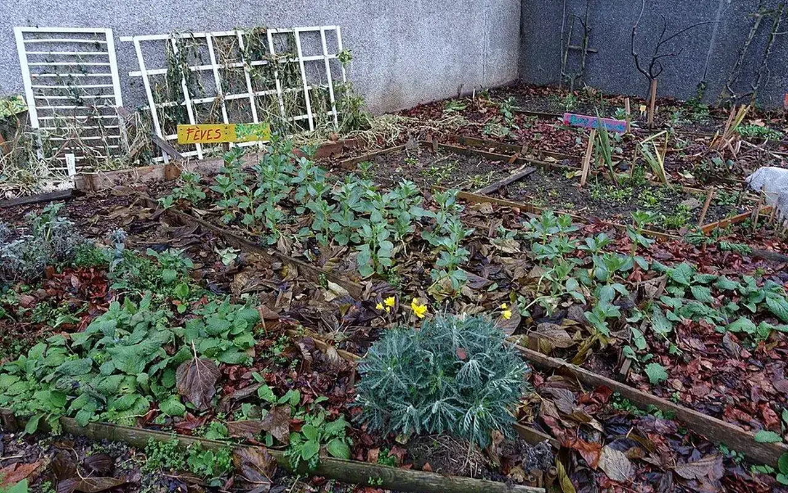

Dossier public
Friches & Terrains Vivants
Transformer les espaces abandonnés en lieux utiles et durables.

Ce pôle prépare la transformation progressive des espaces délaissés en lieux de respiration, de production, de lien social, de biodiversité et d'usage collectif.
Objectif du pôle
Définir des usages utiles, durables et acceptables pour des espaces abandonnés, avec les habitants et acteurs locaux concernés.
Compl’mentarité
Ce pôle dialogue avec l'Observatoire pour repérer les sites, la Matériauthèque pour les aménagements et Solidarité & Insertion pour l'engagement local.
Pourquoi ce pôle existe
Problèmes actuels en France
Des terrains, friches et espaces délaissés restent inutilisés alors qu'ils pourraient accueillir des usages sociaux, écologiques ou pédagogiques.
Objectifs du pôle
Identifier les espaces, comprendre leur potentiel, mobiliser les habitants et concevoir des usages temporaires ou durables adaptés.
Résultats attendus
Des espaces mieux connus, des usages utiles, des lieux plus accueillants et une contribution à la nature en ville lorsque cela est possible.
Notre méthode d'action
Repérer les terrains vacants, friches, espaces délaissés ou sous-utilisés.
Évaluer les contraintes d'accès, de sécurité, de propriété, d'usage et d'entretien.
Travailler avec habitants, collectivités, associations et acteurs de terrain.
Structurer des usages sobres, progressifs, réversibles et utiles au territoire.
Exemples de projets possibles
Jardins partagés
Espaces de culture, de rencontre et d'apprentissage ouverts aux habitants.
Fermes urbaines
Usages nourriciers à construire avec des partenaires compétents.
Espaces pédagogiques
Lieux d’éducation à l'environnement, au réemploi et à la vie locale.
Vergers citoyens
Plantations collectives pens’es pour le long terme, l'entretien et la transmission.
FAQ Friches & Terrains
Peut-on transformer n'importe quel terrain ?
Non. Il faut vérifier la propriété, la sécurité, l'accès, les contraintes techniques et les règles locales.
Les projets sont-ils temporaires ou permanents ?
Les deux sont possibles selon le contexte. L'association prépare d'abord une méthode d'activation progressive.
Qui entretient les lieux ?
L'entretien doit être prévu dès le départ avec les habitants, collectivités, associations ou partenaires concernés.
Explorer les autres pôles
Friches et terrains abandonnés : recycler l’existant pour éviter l’étalement
Les friches sont des lieux complexes : anciens sites industriels, équipements publics fermés, bâtiments militaires, terrains commerciaux, espaces ferroviaires ou bâtiments d’habitat dégradé. Leur transformation demande une lecture fine de la propriété, de la pollution, des accès, du coût de remise en État et du projet de territoire.
Le contexte national rend cette question stratégique. La France vise le zéro artificialisation nette en 2050, avec un objectif intermédiaire de réduction de moitié de la consommation d’espaces naturels, agricoles et forestiers sur 2021-2031 par rapport à 2011-2021. Réutiliser les friches devient donc une réponse écologique, mais aussi économique et sociale.
Comment TVF intervient
TVF peut aider à passer du signalement à une première hypothèse d’usage : jardin partagé, espace nourricier, local associatif, atelier, espace culturel, renaturation légère ou projet de formation.
L’association ne remplace pas les études techniques. Elle structure le terrain : collecte d’informations, mobilisation citoyenne, repérage des usages, médiation et orientation vers les acteurs compétents.
Carte des friches et usages possiblesCouche prévue : friches signal’es, niveau de validation, pollution connue, propriétaire, potentiel de renaturation, potentiel d’usage social.
Exemple fictif à visée pédagogiqueUne petite friche en entrée de bourg pourrait accueillir provisoirement un verger citoyen et des ateliers de sensibilisation, avant un projet urbain définitif. Exemple fictif, non réalisé par TVF.
Pourquoi les friches coûtent-elles cher ?
La dépollution, la démolition, la sécurisation et les études peuvent représenter une part importante du budget.
Toutes les friches sont-elles constructibles ?
Non. Le zonage, la pollution, les risques, la biodiversité et la propriété peuvent limiter ou orienter les usages.
Quel est l’intérêt d’un usage temporaire ?
Il peut éviter l’abandon prolongé, tester un besoin local et structurer une décision plus lourde.
Passer d'un espace délaissé à un usage sobre et sécurisé
Friches & Terrains Vivants traite les espaces où rien ne semble possible au premier regard : anciennes emprises, dents creuses, terrains en attente, sols contraints, abords dégradés ou espaces publics sous-utilisés.
1. Localiser
Cartographier l'emprise, les accès, les limites, le voisinage et les usages informels.
2. Sécuriser
Identifier risques visibles, clôtures, pollution suspectée, dépôts et contraintes d'accès.
3. Qualifier
Analyser propriété, urbanisme, sols, biodiversité, réseaux et compatibilité des usages.
4. Choisir l'usage
Jardin partagé, verger, espace associatif, pédagogique, culturel, biodiversité ou usage transitoire.
5. Encadrer
Convention, assurance, entretien, responsabilités, règles d'ouverture et sortie du dispositif.
6. Entretenir
Un espace vivant exige un calendrier, des référents, des usages clairs et un suivi dans le temps.
| Usage possible | Conditions minimales | Bénéfice attendu |
|---|---|---|
| Jardin partagé | Sol compatible, accès, eau, règles d'usage et animation. | Cadre de vie, lien social, biodiversité de proximité. |
| Occupation transitoire | Durée, assurance, sécurité, responsabilités et sortie clarifiées. | Eviter l'abandon prolongé et tester un usage. |
| Espace culturel ou pédagogique | Accueil du public, accessibilité, sécurité, autorisations. | Redonner une fonction collective à un lieu délaissé. |
Peut-on occuper une friche sans autorisation ?
Non. Propriété, accès, sécurité et assurance doivent être clarifiés avant toute action.
Une friche polluée peut-elle être transformée ?
Oui dans certains cas, mais uniquement après diagnostics et avec des usages compatibles.
Quels partenaires sont concernés ?
Collectivités, propriétaires fonciers, urbanistes, paysagistes, associations, services environnement et habitants.
Lecture opérationnelle
Comprendre rapidement Friches & Terrains Vivants
| Question | Réponse TVF | Preuve ou livrable attendu |
|---|---|---|
| Quel besoin traite la page ? | Qualifier une situation territoriale avant de proposer une action. | Fiche de lecture, diagnostic ou formulaire adapté. |
| Quels acteurs sont concernés ? | Collectivités, propriétaires, entreprises, associations, financeurs ou citoyens selon le sujet. | Interlocuteur identifié, rôle clarifié, accord de publication si nécessaire. |
| Comment passer à l'action ? | Documenter le besoin, choisir le parcours, rassembler les pièces et cadrer les responsabilités. | Fiche projet, convention, budget, calendrier et indicateurs. |
Friches, terrains et espaces
Du constat à l'action : Friches & Terrains Vivants
Cette page aide à comprendre comment qualifiér un espace abandonne avant toute transformation.
Problème
Une friche ou un terrain délaissé peut bloquer un quartier, generer des risques et consommer l'attention publique.
Donnée utile
Repere public : Cartofriches du Cerema facilite l'identification et le partage d'informations sur les friches.
Solution TVF
TVF relie diagnostic, usages compatibles, partenaires, regles d'acces, sécurité et suivi dans le temps.
Méthode
Aucune occupation n'est envisagee sans accord, assurance, autorisations, verification du sol et sortie clarifiee.
Acteurs
Collectivités, propriétaires fonciers, urbanistes, paysagistes, associations, habitants et services techniques.
Impact visé
Transformer des espaces délaissées en usages sobres : jardin, lieu associatif, biodiversite, formation ou culture.
FAQ
Questions fréquentes sur ce pôle
Friches & Terrains Vivants précise les précautions nécessaires avant de transformer un espace délaissé.
Une friche peut-elle être transformée rapidement ?
Dans Friches & Terrains Vivants, une transformation n'est envisageable qu'après clarification des risques, de la propriété, de la pollution potentielle, de l'accès et de l'assurance.
Quels usages sont envisageables ?
Pour Friches & Terrains Vivants, jardins partagés, espaces nourriciers, lieux associatifs, ateliers, usages culturels ou aménagements provisoires peuvent être étudiés selon le site.
Pourquoi cartographier avant d'agir ?
Friches & Terrains Vivants doit relier chaque lieu à son contexte urbain, écologique, social et foncier pour éviter les actions isolées.
Passer à l’action
Choisir le parcours adapté à votre rôle
Chaque demande doit être orientée vers un cadre clair : besoin territorial, propriétaire, ressource, financement, bénévolat ou coopération institutionnelle.